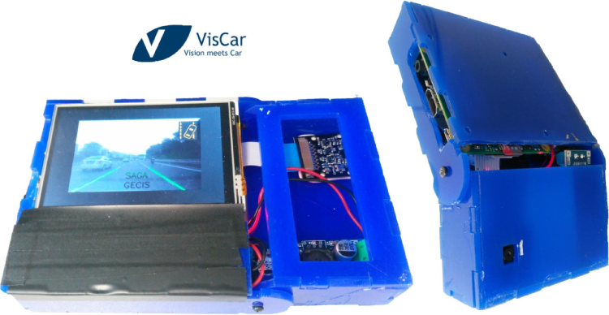
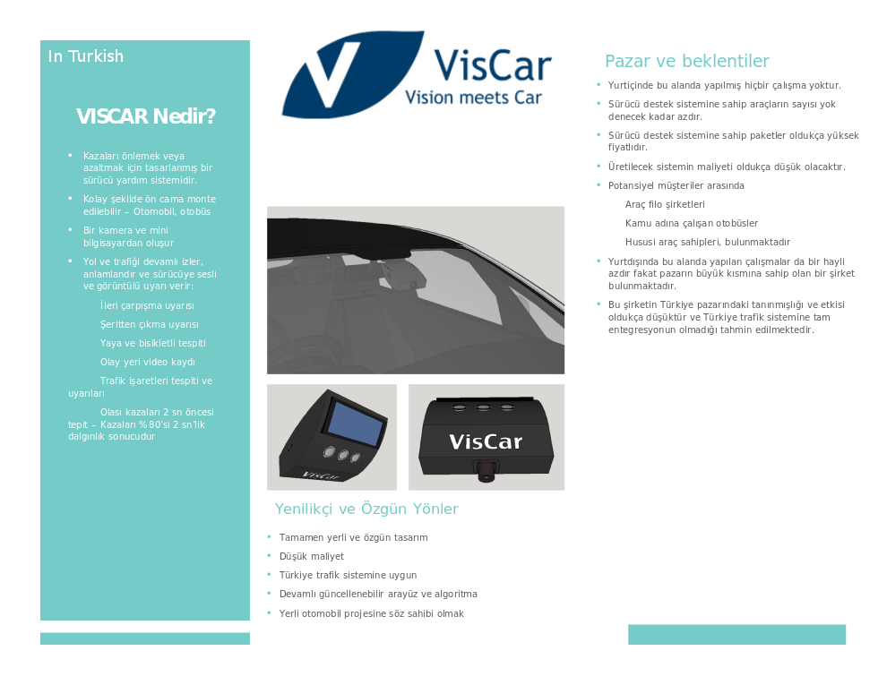
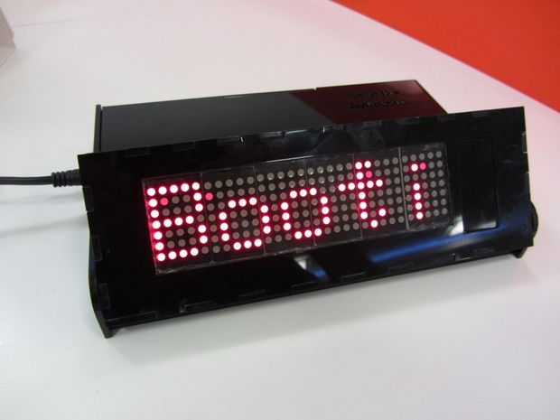

Mahmut Demir
You can find my current and past projects that I have been working on alongside my research
VisCar - Vision based driver asistance system
Our business idea, won the "Total Oil Prize" in IsteBu start-up accelaration competition. You can find the short summary of our idea below. We are currently developing the prototype based on RaspberryPI.
VisCar is a portable, low-cost and color camera based driver assistance system which has several advance features such as lane tracking, forward collision warning, traffic sign detection. We are working on developing a prototype and planning to show a short demo of our product at the day of presentation. According to our market research, number of vehicles which has advanced driver assitance system is no more than 4% of all vehicles in the world and these systems have very high prices. Our purpose is to develop low cost and highly portable driver assistance system in order to enable almost any car to have these systems and hence increase the driving comfort and safety for drivers. Moreover, our product will be based on high technology and it will be an intermediate step to develop full automous driving assistance systems. We believe that technical knowledge base of our country will also be expanded by developing this systems.
 SmartBox - Notification box powered by BeagleBone
I have designed a multi-purpose standalone device which displays tweets, e-mail notifications or customizable feeds such as weather report. The advantage is that it uses BeagleBone credit sized computer with 3G modem to fetch notifications. All the design documents including CAD files, PCB files are documented online at instructtables.com
